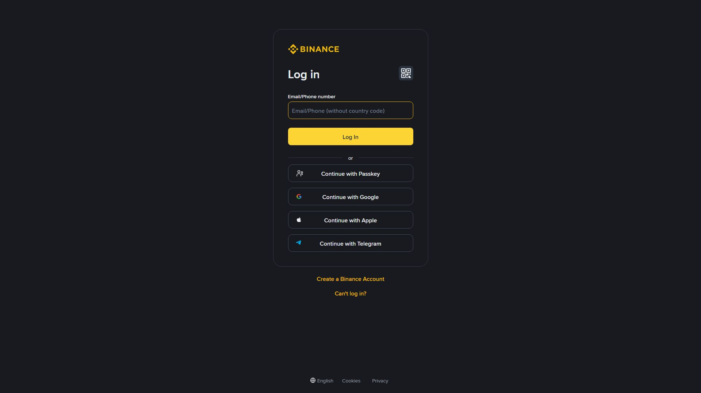

آپ کے پیسوں کی سب سے بڑی دشمن کوئی ہیکر نہیں — خود آپ ہیں، اگر سیکیورٹی نہ سمجھیں۔ ایک کہانی یاد رکھیں: 2019 میں بائننس پر ہیک ہوا اور تقریباً 7,000 BTC چرائے گئے — مگر صارفین کا ایک پیسہ بھی نہیں گیا، کیونکہ SAFU فنڈ نے معاوضہ دیا۔ یہ باب آپ کے اکاؤنٹ کو محل بنانے کا نقشہ ہے۔
2019: بائننس پر ہیک ہوا اور تقریباً 7,000 BTC چرائے گئے (اُس وقت تقریباً $40 ملین)۔ بائننس نے SAFU فنڈ سے صارفین کو مکمل معاوضہ دیا۔
2022: FTX ایکسچینج کریش ہوئی — صارفین کے $8 ارب سے زیادہ پھنس گئے۔ سبق: ایکسچینج بھی ایک خطرہ ہے۔
ہر روز: ہزاروں صارفین فلشنگ (Phishing) کا شکار ہوتے ہیں — جعلی ای میل، جعلی ویب سائٹ، اور "سپورٹ" بن کر کوڈ مانگنے والے دھوکے باز۔
نتیجہ: بائننس نے Proof of Reserves اور مضبوط SAFU فنڈ متعارف کرایا۔
| خطرہ | وضاحت | نقصان | سے بچاؤ |
|---|---|---|---|
| Phishing (فلشنگ) | جعلی ای میل/ویب سائٹ | لاگ ان تفصیلات چوری | Anti-Phishing Code |
| SIM Swap | نمبر ہائی جیک → SMS OTP گیا | اکاؤنٹ چوری | Google Authenticator |
| Malware | کمپیوٹر میں کلیدی لاگر | پاس ورڈ چوری | اینٹی وائرس + Hardware Wallet |
| Social Engineering | "سپورٹ" بن کر کوڈ مانگنا | اکاؤنٹ چوری | کبھی کوڈ مت دیں |
| خود کی غلطی | غلط ایڈریس پر وِڈراول | فنڈ گئے | Whitelist + Copy |
ہیکر کا ہدف: آپ کا اکاؤنٹ
│
├── 1. پاس ورڈ ٹوٹ گیا؟ ── نہیں ──→ 2FA ہے؟
│ │
│ ├── ہاں → 2FA کوڈ چرا لیں (SMS swap / phishing)
│ └── نہیں → ✅ اکاؤنٹ گیا
│
└── 2. پاس ورڈ ٹوٹ گیا ──→ 2FA ہے؟
│
├── ہاں → 2FA کوڈ ضروری
└── نہیں → ✅ اکاؤنٹ گیا💡 سبق: اگر آپ کے پاس صرف پاس ورڈ ہے، تو ہیکر کے لیے آپ کا اکاؤنٹ ایک قفل ہے جس کی ایک ہی چابی ہے۔ اگر آپ کے پاس 2FA + Whitelist + Anti-Phishing ہے، تو وہ تین الگ قفلوں والا خزانہ ہے۔
┌────────────────────────────────────────────┐
│ بائننس کی حفاظت کے ستون │
│ │
│ ┌───────────┐ ┌──────────────────┐ │
│ │ 2FA (آپ) │ │ Anti-Phishing │ │
│ │ │ │ (آپ سیٹ کریں) │ │
│ └───────────┘ └──────────────────┘ │
│ ┌───────────┐ ┌──────────────────┐ │
│ │ Whitelist │ │ SAFU Fund │ │
│ │ (آپ) │ │ (بائننس) │ │
│ └───────────┘ └──────────────────┘ │
│ ┌──────────────────────────────────────┐ │
│ │ Cold Storage — فنڈز کی 95% آف لائن │ │
│ └──────────────────────────────────────┘ │
└────────────────────────────────────────────┘🎯 اہم تقسیم: پہلے تین ستون آپ کی ذمہ داری ہیں، آخری دو بائننس کی۔ بائننس اپنا حصہ پورا کر رہی ہے — اب آپ اپنا حصہ کریں۔
2FA (Two-Factor Authentication) یعنی پاس ورڈ کے علاوہ ایک اور ثبوت۔ یہ آپ کے اکاؤنٹ کی سب سے اہم دیوار ہے۔
کیا ہے؟ پاس ورڈ = کچھ جو آپ جانتے ہیں۔ 2FA = کچھ جو آپ کے پاس ہے (فون/ڈیوائس)۔ دونوں ملے تب اندر جا سکتے ہیں۔
| طریقہ | سیکیورٹی | سہولت | خطرہ |
|---|---|---|---|
| SMS 2FA | ⚠️ کمزور | آسان | SIM Swap |
| Google Authenticator | ✅ بہت مضبوط | ایک ایپ | فون گم → Backup Key |
| Authy / Microsoft Authenticator | ✅ مضبوط | بیک اپ سہولت | — |
| YubiKey (ہارڈویئر) | ✅✅ بہترین | الگ ڈیوائس | قیمت |
🔒 بہترین امتزاج: Google Authenticator + Anti-Phishing Code + Whitelist
1. دھوکے باز آپ کی ذاتی معلومات اکٹھی کرتا ہے (نام، نمبر، CNIC)
2. آپ کے نمبر والی ٹیلیکام کمپنی سے رابطہ کرتا ہے
3. "میرا فون کھو گیا، نمبر اس نئے SIM پر منتقل کریں" کہتا ہے
4. نمبر منتقل ہو جاتا ہے → اب وہ آپ کے تمام SMS وصول کرتا ہے
5. بائننس پر "Forgot Password" → SMS کوڈ → پاس ورڈ بدل دیتا ہے
6. ✅ اکاؤنٹ چوری ہو گیا⚠️ SIM Swap دنیا بھر میں ہو رہا ہے — خاص طور پر کرپٹو ہولڈرز کے خلاف۔ کبھی بھی SMS کو اپنا واحد 2FA مت بنائیں۔
| پلیٹ فارم | ایپ |
|---|---|
| Android | Google Authenticator (Play Store) |
| iOS | Google Authenticator (App Store) |
| متبادل | Authy، Microsoft Authenticator، 2FAS |
Profile → Security → Two-Factor Authentication → Google Authenticatorاب ہر لاگ ان اور ہر اہم کارروائی (وِڈراول، API بنانا، سیٹنگز بدلنا) پر 2FA کوڈ درکار ہوگا۔
⚠️ یہ سب سے اہم حصہ ہے۔ جب آپ کا فون گم، چوری، یا ری سیٹ ہو جائے، تو Backup Key کے بغیر آپ 2FA تک نہیں پہنچ سکتے — اور آپ کا اکاؤنٹ ہمیشہ کے لیے بند ہو سکتا ہے۔
Backup Key کیسے محفوظ رکھیں:
| طریقہ | مشورہ |
|---|---|
| ✅ کاغذ پر لکھیں | ہاتھ سے لکھیں، دراز میں رکھیں |
| ✅ دو جگہ کاپی | گھر + محفوظ دوسری جگہ |
| ❌ اسکرین شاٹ | فون/کلاؤڈ میں مت رکھیں |
| ❌ WhatsApp/Telegram | کبھی نہیں |
| ❌ ای میل اپ خود | اگر ای میل ہیک ہو جائے... |
🔐 بہترین طریقہ: کاغذ پر لکھیں اور اسے فلائنگ آف (offline) رکھیں۔ یہ 20 کریکٹرز کی ایک سطر ہے — یاد رکھنا مشکل، مگر کاغذ پر محفوظ = ہمیشہ دستیاب۔
| نکتہ | وجہ |
|---|---|
| Backup Key محفوظ رکھیں | فون گم/ری سیٹ ہو تو بحالی کے لیے |
| کاغذ پر لکھیں | اسکرین شاٹ کلاؤڈ میں نہ رکھیں |
| کسی کو مت بتائیں | 2FA کوڈ = اکاؤنٹ کی چابی |
| SMS 2FA سے بچیں | SIM Swap سے اکاؤنٹ چوری |
| کوڈ کی میعاد | 30 سیکنڈ — وقت پر درج کریں |
| ایک ساتھ دو کوڈ مت داخل | پرانا کوڈ ریجیکٹ ہوگا |
⚠️ سنہری قاعدہ: بائننس، کوئی بینک، یا کوئی "سپورٹ" کبھی آپ سے 2FA کوڈ نہیں مانگتا۔ جو مانگے — وہ دھوکے باز ہے۔
آپ ایک خفیہ کوڈ سیٹ کرتے ہیں۔ بائننس کے ہر سرکاری ای میل میں یہ کوڈ دکھائی دے گا۔ اگر کسی ای میل میں یہ کوڈ نہ ہو — وہ جعلی ہے، خواہ کتنا ہی حقیقی لگے۔
یہ بالکل ویسا ہی جیسے بینک آپ کو ایک خفیہ نشان دے اور کہے: "جب بھی ہم آپ کو خط بھیجیں، یہ نشان ضرور ہوگا۔"
Profile → Security → Anti-Phishing Code
1. کوئی یادگار کوڈ لکھیں (مثلاً: MY-CODE-2026)
2. Save / Confirm کریں (2FA سے تصدیق)✅ سرکاری (Original):
موضوع: Your withdrawal request
[Anti-Phishing Code: MY-CODE-2026] ← آپ کا کوڈ موجود❌ فلشنگ (Fake):
موضوع: ⚠️ URGENT: Verify your account now!
(کوئی Anti-Phishing Code نہیں) ← کوڈ غائب
→ لنک پر کلک نہ کریں!| نشان | مثال |
|---|---|
| ❌ Anti-Phishing Code غائب | سب سے پہلا اور یقینی چیک |
| ❌ فوری Sens of urgency | "اکاؤنٹ 24 گھنٹے میں بند ہوگا!" |
| ❌ غر ntی دھمکی | "اگر تصدیق نہ کی تو فنڈ فریز" |
| ❌ غلط ای میل ایڈریس | noreply@binance-secure.com |
| ❌ spelnging ایررز | "Blnace"، "Verifay" |
| ❌ غسل لنک | binance-verify.com |
| ❌ کوڈ/پاس ورڈ مانگنا | اصلی بائننس کبھی نہیں مانگتا |
| ❌ بونس/انعام کا لالچ | "آپ نے 0.5 BTC جیتا!" |
💡 اپنے خاندان/ساتھیوں کو بھی بتائیں کہ وہ یہ کوڈ سیٹ کریں — یہ ایک سادہ مگر طاقتور ہتھیار ہے۔ خاص طور پر وہ لوگ جو ای میل پر فوری کلک کرتے ہیں۔

جب یہ فعال ہو، تو آپ صرف اُن ایڈریسوں پر وِڈراول کر سکتے ہیں جو آپ نے پہلے شامل کیے ہوں۔ کوئی ہیکر اکاؤنٹ میں بھی آ جائے، نئے ایڈریس پر فنڈ نہیں بھیج سکتا — کیونکہ وہ ایڈریس وائٹ لسٹ میں موجود نہیں۔
یہ آپ کے اکاؤنٹ کی سب سے مضبوط دیوار ہے۔ حتیٰ کہ اگر پاس ورڈ + 2FA دونوں چھن جائیں، تب بھی پیسے صرف آپ کے اپنے ایڈریس پر جا سکتے ہیں۔
Profile → Security → Address Management / Whitelist
1. "Add New Address" دبائیں
2. EVM/نیٹ ورک منتخب کریں (باب 24)
3. ایڈریس درج کریں (مثلاً: 0x1234...abcd)
4. یادگار نام دیں (مثلاً: "میرا Trust Wallet")
5. تصدیق (2FA/ای میل) کریں| خصوصیت | تفصیل |
|---|---|
| فعال ہونے میں وقت | نئے ایڈریس پر عام طور پر 24 گھنٹے سے کچھ زیادہ |
| تبدیلی | تبدیل کرنے پر دوبارہ تصدیق + انتظار |
| تعداد | محدود تعداد میں ایڈریس رکھ سکتے ہیں |
| حفاظت | ہائی جیک ہونے پر بھی چوری ناممکن |
| نیٹ ورک | ہر نیٹ ورک کے لیے الگ ایڈریس |
⚠️ یاد رکھیں: ایڈریس ہمیشہ پوری تفصیل سے چیک کریں — پہلے اور آخری چند کریکٹر دیکھ کر کاپی کریں۔ اگر ایک بھی کریکٹر غلط ہوا، تو پیسے کسی اور کو چلے جائیں گے — اور واپسی ناممکن ہے۔
ایک صارف کا پاس ورڈ لیک ہو گیا (اسی ای میل+پاس ورڈ کہیں اور استعمال کیا تھا)
│
├── ہیکر نے لاگ ان کیا ✓
├── ہیکر نے وِڈراول کی کوشش کی
│ └── اپنا ایڈریس ڈالا → ❌ وائٹ لسٹ میں نہیں!
│ └── وِڈراول فیل!
│
└── صارف کو ای میل آیا → اس نے فوراً پاس ورڈ بدلا + 2FA بدلا
↓
✅ پیسے محفوظ رہے!SAFU = Secure Asset Fund for Users (صارفین کے اثاثوں کا محفوظ فنڈ)
| نکتہ | تفصیل |
|---|---|
| قیام | 2018 |
| مقصد | غیر متوقع نقصان/ہیک پر صارفین کی حفاظت |
| ذریعہ | بائننس اپنی ٹریڈنگ فیس کا ایک حصہ SAFU میں ڈالتا ہے |
| مقدار | تقریباً $1 بلین کے آس پاس (مارکیٹ کے ساتھ تبدیل) |
| پہلا استعمال | 2019 کے ہیک میں صارفین کو مکمل معاوضہ |
| رکھوٹی جگہ | BNB، BTC، USDT وغیرہ میں diversified |
⚠️ SAFU گارنٹی نہیں — یہ ایک حفاظتی بفر ہے۔
- ❌ اگر آپ خود غلط ایڈریس پر پیسے بھیج دیں → کوئی معاوضہ نہیں
- ❌ اگر آپ کا اکاؤنٹ فلشنگ سے چوری ہو جائے → کوئی معاوضہ نہیں
- ❌ اگر آپ نے کسی کو پاس ورڈ/2FA دے دیا → کوئی معاوضہ نہیں
- ❌ اگر آپ کی اپنی غلطی سے فنڈ گئے → کوئی معاوضہ نہیں
💡 خلاصہ: SAFU بنیادی طور پر ایکسچینج کی سیکیورٹی کے لیے ہے، آپ کی غلطی کے لیے نہیں۔ آپ کی حفاظت کی پہلی لائن آپ خود ہیں — 2FA، Whitelist، Anti-Phishing۔
💡 کیا کرتا ہے یہ؟ یہ ثابت کرتا ہے کہ بائننس کے پاس صارفین کا ہر ڈالر/کوائن واقعی موجود ہے — کوئی FTX جیسا فراڈ نہیں۔
Profile → Security → Security Checkupیہ ٹول بتاتا ہے:
💡 مشورہ: یہ چیک اپ ہر 2-3 ماہ بعد ضرور چلائیں۔ یہ 30 سیکنڈ کا کام ہے، اور آپ کو بتا دے گا کہ کہیں کوئی سیٹنگ بکھری تو نہیں۔
⚠️ اہم: اگر آپ کوئی نیا فون/لیپ ٹاپ خریدیں، تو پرانا ڈیوائس یہاں سے لاگ آؤٹ ضرور کریں۔
| سیٹنگ | حالت | نوٹ |
|---|---|---|
| 2FA | ✅ واجب | Google Authenticator |
| Anti-Phishing Code | ✅ واجب | ہر ای میل چیک ہو |
| Whitelist | ✅ انتہائی مفید | صرف اپنے ایڈریس |
| پاس ورڈ | ✅ مضبوط | 12+ کریکٹرز، منفرد |
| Backup Key | ✅ آف لائن | کاغذ پر |
| Device Check | ✅ ماہانہ | نامعلوم ڈیوائس لاگ آؤٹ |
| سبب | حل |
|---|---|
| بار بار غلط پاس ورڈ | کچھ دیر انتظار → پھر کوشش |
| غیر معمولی لاگ ان | ای میل/SMS سے تصدیق |
| KYC مسئلہ | دوبارہ تصدیق |
| مشکوک سرگرمی | بائننس سپورٹ سے رابطہ |
| VPN سے رسائی | VPN بند کریں، اصلی IP سے |
اگر آپ کو شک ہو کہ اکاؤنٹ ہائی جیک ہوا:
1. Settings → Security → Account Activity
2. "Freeze Account" یا "Lock Account" چیک کریں
3. فوراً پاس ورڈ بدلیں
4. 2FA دوبارہ سیٹ کریں
5. سپورٹ کو اطلاع دیں (Help Center → Live Chat)💡 فوری مشورہ: جتنا جلدی آپ ردعمل ظاہر کریں گے، اتنا ہی کم نقصان ہوگا۔ پہلا گھنٹا سب سے اہم ہوتا ہے۔
🎯 یہ چیک لسٹ آج ہی مکمل کریں۔ یہ 20 منٹ کا کام ہے، اور آپ کے پورے کرپٹو خزانے کو محفوظ بنا دے گا۔
| # | اقدام | وقت | فائدہ |
|---|---|---|---|
| 1 | Google Authenticator انسٹال + 2FA سیٹ | 5 منٹ | پاس ورڈ لیک ہو تب بھی محفوظ |
| 2 | Backup Key کاغذ پر لکھیں | 2 منٹ | فون گم ہو تو بحالی |
| 3 | Anti-Phishing Code سیٹ کریں | 2 منٹ | جعلی ای میل پکڑیں |
| 4 | Address Whitelist آن کریں | 5 منٹ | ہیکر فنڈ نہ نکال سکے |
| 5 | پاس ورڈ 12+ کریکٹرز، منفرد | 3 منٹ | براؤن فورس سے بچاؤ |
| 6 | ای میل کا پاس ورڈ الگ رکھیں | 2 منٹ | ای میل ہیک = بائننس محفوظ |
| 7 | Device Management چیک کریں | 1 منٹ | نامعلوم ڈیوائس نکالیں |
| 8 | Security Checkup چلائیں | 1 منٹ | کیا کچھ بکھرا ہے پتا چلے |
| 9 | بوک مارک binance.com کا | 30 سیکنڈ | فلشنگ سائٹ سے بچاؤ |
| 10 | 2FA کوڈ کسی کو مت دیں | 0 سیکنڈ | سب سے بنیادی اصول |
✅ مکمل ہونے پر: آپ کا اکاؤنٹ اب 90% زیادہ محفوظ ہے۔ باقی 10%؟ وہ آپ کی حواس رکھنے کی ذمہ داری ہے۔
سیکیورٹی ایک بار نہیں، ہر روز کی عادت ہے۔ آپ کا پاس ورڈ، 2FA کوڈ، اور Backup Key — یہ تینوں آپ کے ڈیجیٹل خزانے کی چابیاں ہیں۔ کسی کو نہ دیں، کسی پر بھروسہ نہ کریں، اور کبھی لاپرواہ نہ ہوں۔
اور یہ کہ سب سے طاقتور ہیکر وہ نہیں جو آپ کا اکاؤنٹ توڑے — بلکہ وہ جو آپ سے چابیاں خود لے لے۔ فلشنگ، دھوکے، اور لالچ — یہ وہ ہتھیار ہیں جن کا مقابلہ کوئی سافٹ ویئر نہیں، صرف آپ کی سمجھ کر سکتی ہے۔